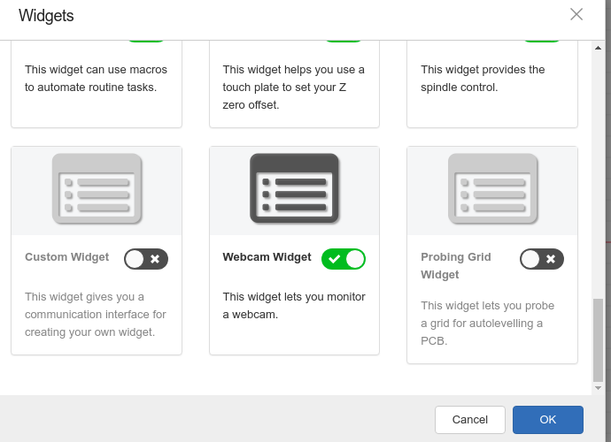
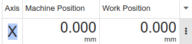

|
cncjs autolevel widget blog December 2022 |
|
|
cncjs autolevel widget blog December 2022 |
Table of Contents
GRBL Arduino Serial Port Permission 3
Methods for outputting text for debugging purposes 8
Analyzing Program Structure 10
Adding the Autolevel widget 12
Capture Probing event from Serial Port 13
Adding a Dialog for the Probing Grid Parameters 14
Display messages that are stored in G-Code 15
Have to click Resume several times for one G-Code Line 15
Trigger loading g-code programmatically 16
Passing Data from Grbl Controller to Autolevel Widget 18
Serial port Data Parsing and sending probe data to the widget 21
|
Revision Date |
Version |
Description |
|
2020-03-08 |
0.1 |
Initial Version |
|
2022-12-09 |
|
|
|
|
|
|
|
|
|
|
modify CNC.JS to output the probing results.
Modify autolevel widget to output the measured probe positions.
Install node.js:
https://linuxhint.com/ways-install-use-nodejs-ubuntu/
Use nvm (node version manager) to install the latest version
curl -o- https://raw.githubusercontent.com/nvm-sh/nvm/v0.39.1/install.sh | bash
log out and back in so that .bash_rc is run
List available versions:
nvm list-remote
Install version 12 of node:
nvm install 12
This is the version that is listed as the version to use at
https://github.com/cncjs/cncjs#supported-nodejs-versions
Validate installation and list version:
node --version
as of current date: v19.2.0
https://www.arduino.cc/en/Guide/Linux#toc6
sudo usermod -a -G dialout user
And / or
sudo chmod a+rw /dev/ttyACM0
logout and login or reboot
Download curent development source code:
git clone https://github.com/atmelino/cncjs_1_10_0_AL.git
The github repository does not contain all the node modules required, because of the size and number of files. In its current state, the source code size is about 66 Mbytes.
Install node dependencies:
npm install
The file package.json contains a list of the required modules as well as commands that can be run.
In the root of the project, run
npm run build-prod
at the new version, this leads to error
events.js:160
throw er; // Unhandled 'error' event
^
Error: This socket has been ended by the other party
In that case, build van be completed sucessfully by building parts separately.
The build-prod script stands for
"build-prod": "concurrently --kill-others-on-fail --names \"build-prod-app,build-prod-web\" \"npm run build-prod-app\" \"npm run build-prod-web\"",
Instead of running build-prod, first run
npm run build-prod-app
when it is finished, run
npm run build-prod-web
From Previous doc:
Create a service for autostart:
sudo nano /etc/systemd/system/cncjs.service
and enter
[Unit]
Description=cncjs application
Documentation=https://github.com/atmelino/cncjs
After=network.target
[Service]
Environment=NODE_PORT=3002
Type=simple
User=root
WorkingDirectory=/media/data/github/cncjs
ExecStart=/usr/local/n/versions/node/12.16.1/bin/node /media/data/github/cncjs_1_10_0_AL/bin/cncjs
Restart=on-failure
[Install]
WantedBy=multi-user.target
to start the service:
sudo systemctl start cncjs
to stop the service:
sudo systemctl stop cncjs
make sure it starts every time system boots:
sudo systemctl enable cncjs
To get the status of the Dropbox service:
systemctl status cncjs
Download original source code:
git clone https://github.com/cncjs/cncjs.git
The follwing command will build the project and start the server:
npm run dev
When changes are made to the source code, the changes are automatically updated in the running application.
Run the client:
Open a web browser and go to the URL
http://127.0.1.1:8000
Just check for syntax errors:
npm run eslint
- For production:
npm run build-latest
Run the server:
npm start
Run the client:
Open a web browser and go to the URL
http://127.0.1.1:8000
Test: Installation on a new computer
- install npm by sudo apt install npm
- npm update
- download zip from cnc.js github
- extract
- cd cncjs-master/
- npm run build-latest
- npm start
works!
Settings are stored in the file
package.json
Different directories can have their own
package.json
To prevent certain code issues from causing an error in building, edit
./.eslintrc.js
and add
"rules": {
"lines-between-class-members": "off",
"no-unused-vars": "off",
"max-lines-per-function": "off",
}
The source code repository has a script folder.
In the script folder, there is a file named prebuild-prod.sh.
In prebuild-prod.sh, trhere is a line "mkdir -p ../dist/cnc/"
To use the scripts, we need babel:
npm install -g babel-cli
scripts/prebuild-prod.sh
leads to the creation of dist/cnc/electron-app but not dist/cnc/web
However, package.json contains a script section. In this file is a number of build commands, some of which refer to a web folder.
The command
npm run build-prod-web
will create the desired web folder.
Getting whole repository from github:
git clone https://github.com/atmelino/cncjs.git
Getting new changes from github:
git pull
Sending new changes to github:
if new files:
git add (name of file or folder)
git commit -a
git push origin master
Messages from the server side will be shown in the terminal in which we run
npm start
The file in which we log must have the import
import logger from '../../lib/logger';
This logging system has several verbosity levels:
|
Name |
Program start parameter |
|
verbose |
v |
|
debug |
vv |
|
silly |
vvv |
For example, if we start the server with the parameter vvv then this will print a message:
run
node bin/cncjs -vvv
Edit file
GrblController.js
52: log.silly('hello hello !!!');
and start in vvv level
Alternatively, we could add the line
"start-vvv": "./bin/cnc -vvv",
in the scripts section of package.json
and start with
npm run start-vvv
the function log.error will output in the terminal at the lowest and any verbosity level.
Messages from the client side will be shown in the web browser in which we open the console panel
In Chrome, we open the console panel with CRTL-SHIFT-J
The file in which we log must have the imports
import { TRACE, DEBUG, INFO, WARN, ERROR } from 'universal-logger';
import log from '../../lib/log';
Example:
|
|
src/web/widgets/Macro/index.jsx |
|
11 |
import log from '../../lib/log'; |
|
70 |
log.error('full screen toggled'); |
In addition, cncjs has a console widget and in this we can print debug messages
File:
src/web/widgets/Console/index.jsx
103: this.terminal.writeln('hello');
File:
GrblController.js
492: this.emit('serialport:read', `test ALARM:${code} (${alarm.message})`);
shows up in console
shows up in browser console
The command
npm start
looks into the file
. / package.json
In this file is a scripts section with
"scripts": {
..
"start": "./bin/cncjs",
..
}
It is also possible to start the server by typing
node bin/cncjs
In the file
./bin/cncjs
the function
default()
is called from the file
./dist/cncjs/server-cli.js
This function calls the function
createServer()
in the file
./dist/server/index.js
Unknown: somehow,
./src/server/services/cncengine/CNCEngine.js
is started and it starts
./src/server/controllers/Grbl/GrblController.js
Inside the class GrblController
the constructor sets up
this.feeder and this.feeder.on events
this.sender and this.sender.on events
this.workflow and this.workflow.on events
this.runner and this.runner.on events
The follwing is from previous doc, needs to be reworked
the server is created in
nodeDevelop/cncjs-autolevel/src/app/index.js
const createServer = (options, callback) => {
There is a function const appMain = () => {
in
nodeDevelop/cncjs-autolevel/src/app/app.js
If I delete it and run
npm run prepare
I get error
nodeDevelop/cncjs-autolevel/src/app/index.js
18:17 error Unable to resolve path to module './app' import/no-unresolved
The framework used causes the initial page to be loaded from
./dist/app/index.hbs
in this file, a javascript source is loaded at
app.e2134974ba17dc978fbd.bundle.js
This is the actual web page.
Sources:
The file
./dist/app/index.hbs
is built from the source at
./dist/src/index.jsx
One approach is to clone a widget, such as laser as laser2, and then compile the code and see if it still runs. If it runs, modify it and restore previous source code state if run time error occurs.
The file
./src/app/containers/Workspace/WidgetManager/WidgetManager.jsx
contains the variable widgetList. Adding an item will result in the item being offered as an option.


The new widget also needs to be added to the file
./src/app/containers/Workspace/Widget.jsx
the default state needs to be added to
src/app/store/defaultState.js
Finally we need to add a folder named
./src/app/widgets/ProbingGrid
containing the files
index.jsx index.styl ProbingGrid.jsx react-table.css
Probing grid uses additional modules which need to be installed:
npm i react-table
npm i numeral
When a probing command is sent to the GRBL controller through the serial port, the machine will start probing, and when contact is made, the GRBL controller will send throug the serial port data such as
[PRB:0.000,0.000,7.404:1]
We want to capture these data and send them to the widget.
In the file
./src/server/controllers/Grbl/GrblController.js
replace
this.runner.on('parameters', (res) => {
this.emit('serialport:read', res.raw);
});
with
this.runner.on('parameters', (res) => {
// atmelino
log.error('parameters: ' + JSON.stringify(res));
const probingData = {
type: 'probing',
printed: false,
result: res.value
};
//this.emit('serialport:read', 'parameters');
this.emit('serialport:read', probingData);
this.emit('serialport:read', res.raw);
});
The Probe widget and the Macro widget have dialogs, for reference.
If a component has a member of state,
state = {
mynumber: 9
}
then calling
this.setState({ mynumber: 2.3 });
will update the web page.
2018-11-17
in vvv mode, entire line of g-code is printed in terminal
file:
src/app/controllers/Grbl/GrblController.js
2018-11-18T02:05:59.941Z - silly: controller:Grbl > M0 (Attach probe wires and clips that need attaching)
First M0, have to click only once:
2018-11-18T02:51:40.938Z - error: controller:Grbl M0 Program Pause in Sender
2018-11-18T02:51:40.941Z - error: controller:Grbl GbrController.js this.sender.onM0 (Attach probe wires and clips that need attaching)
Second M0, have to click twice:
2018-11-18T02:53:49.224Z - error: controller:Grbl M0 Program Pause in Sender
2018-11-18T02:53:52.597Z - error: controller:Grbl2 Grbl.js: prb found
2018-11-18T02:53:52.598Z - error: controller:Grbl2 Grbl.js: GrblLineParserResultParameters parameters emit
2018-11-18T02:53:52.599Z - error: controller:Grbl parameters{"name":"PRB","value":{"result":1,"x":"-82.888","y":"-0.048","z":"-2.676"},"raw":"[PRB:-82.888,-0.048,-2.676:1]"}
first click:
2018-11-18T02:54:30.947Z - error: controller:Grbl M0 Program Pause in Sender
2018-11-18T02:54:30.948Z - error: controller:Grbl GbrController.js this.sender.onM0 (Detach any clips used for probing)
needs second click!
Maybe because of the probing G38.2?
Observation:
if there is one G38.2 command before the M0 command, there is only one click to continue.
if there are teo G38.2 commands before the M0 command, there are two clicks to continue!
|
G38.2 Z-1 F100 (Probe to a maximum of the specified probe height at the specified feed rate) |
|
G92 Z0 (Touch off Z to 0 once contact is made) |
|
G0 Z2 (Move Z to above the contact point) |
|
G38.2 Z-1 F50 (Repeat at a more accurate slower rate) |
|
G92 Z0 |
|
G0 Z2 |
|
M0 (Detach any clips used for probing) |
If a gcode file is loaded and I press reload in the browser, the same gcode file is automatically loaded so there is probably another way to initiate loading other than clicking the Upload G-Code button in the Visualizer.
Daog and dropping a gcode file into the web browser window causes the function
onDrop
in the file
Workspace.jsx
to be called.
The function call
api.loadGCode({ port, name, gcode })
in the function onDrop works.
CAMotics
Download deb file and install
Fix missing library error by
sudo apt-get install libqt5websockets5-dev
Create data in Libreoffice Calc
export as csv
import in SciDAVis
convert to matrix
enter column and row coordinates
make 3D Plot
Cloned another widget and named it Autoleveller.
removed Start-Y section from ./src/web/widgets/Autoleveller/Autoleveller.jsx
and it shows up accordingly on web page
the code for GRBL controller communication appears to be in
cncjs-autolevel/src/app/controllers/Grbl/GrblController.js
here a class named GrblController is defined.
It contains a variable named controller which is of type Grbl
38: this.controller = new Grbl();
Grbl is defined in
cncjs-autolevel/src/app/controllers/Grbl/Grbl.js
588: class Grbl extends events.EventEmitter {
There are several widgets that receive data from GrblController.js, for example the Axes widget.
How are the data sent from the GRBL controller to the widget?
In src/web/widgets/Axes/DisplayPanel.jsx
there is a
class DisplayPanel extends PureComponent {
and a render function.
we have a variable named machinePosition
it gets it's value from
|
|
src/web/widgets/Axes/DisplayPanel.jsx |
|
|
const { state, actions } = this.props; |
|
|
const { units, canClick, axes, machinePosition, workPosition } = state; |
so props are used to pass data into the widget which is a React component.
Working backwards from the component:
|
|
src/web/widgets/Axes/DisplayPanel.jsx |
|
35 |
render() { |
|
52 |
return ( |
|
210 |
<span className={styles.integerPart}> {machinePosition.x.split('.')[0]}</span> |
The value of machinePosition is used to display in the axes widget

the value of machinePosition is assigned from this.props
DisplayPanel is instantiated in
|
|
src/web/widgets/Axes/Axes.jsx |
|
|
const Axes = (props) => { |
|
|
const { config, state, actions } = props; |
|
|
return ( |
|
|
<div> |
|
|
<DisplayPanel config={config} state={state} actions={actions} /> |
so DisplayPanel receives its props from Axes, Axes passes the props down to DisplayPanel.
Axes is instantiated in
|
|
src/web/widgets/Axes/index.jsx |
|
87 |
class AxesWidget extends PureComponent { |
|
686 |
render() { |
|
811 |
<Axes config={config} state={state} actions={actions} /> |
It seems like this calls is added to the listeners of the controller. Could this be the connection to the Grbl data received from the serial port?
The function controllerEvents() is added to the listeners of the controller:
|
|
src/web/widgets/Axes/index.jsx |
|
528 |
componentDidMount() { |
|
529 |
this.addControllerEvents(); |
|
596 |
addControllerEvents() { |
|
597 |
Object.keys(this.controllerEvents).forEach(eventName => { |
|
598 |
const callback = this.controllerEvents[eventName]; |
|
599 |
controller.addListener(eventName, callback); |
And in the function controllerEvents() , the variable machinePosition is assigned a value from the state
(coming from the controller ?)
|
|
src/web/widgets/Axes/index.jsx |
|
324 |
controllerEvents = { |
|
355 |
'controller:state': (type, controllerState) => { |
|
|
|
|
416 |
this.setState(state => ({ |
|
417 |
units: units, |
|
418 |
controller: { |
|
419 |
...state.controller, |
|
420 |
type: type, |
|
421 |
state: controllerState |
|
|
|
|
|
|
|
|
machinePosition: mapValues({
|
|
|
...state.machinePosition, |
|
|
|
|
|
|
|
|
src/app/controllers/Grbl/GrblController.js |
|
|
|
|
662 |
this.emit('controller:state', GRBL, this.state); |
|
|
|
Added line to GrblController.js
664: log.error('GrblController.js Grbl state');
and it shows up in the terminal.
Especially, it shows up when probe command is issued.
The command
log.error('' + JSON.stringify(this.state));
prints all the values in the state.
Autoleveller widget does not have the controller:state case in controller events.
Perhaps it would be better to clone a different widget for probing output?
Laser seems like a good candidate because it has addListener and controller:state
Added log output to
|
|
src/web/widgets/Laser/index.jsx |
|
11 |
import log from '../../lib/log'; |
|
|
|
|
117 |
log.error('laser lasertest:on'); |
|
123 |
controllerEvents = { |
|
141 |
'controller:state': (type, controllerState) => { |
|
149 |
log.error('laser controller:state'); |
Lasertest info output works (in browser console)
laser controller state also works.
Where does the parsing of serial port data received take place?
|
|
src/app/controllers/Grbl/GrblLineParserResultParameters.js |
|
395 |
class GrblLineParserResultParameters { |
|
396 |
static parse(line) { |
|
426 |
if (name === 'PRB') { |
|
428 |
log.error('prb found'); |
Leads to output in terminal
2018-11-14T01:32:31.631Z - error: controller:Grbl2 prb found
how can we send the result to the widget?
|
|
src/app/controllers/Grbl/GrblRunner.js |
|
718 |
if (type === GrblLineParserResultParameters) { |
|
730 |
log.error('Grbl.js: GrblLineParserResultParameters parameters emit'); |
|
731 |
this.emit('parameters', payload); |
Leads to
2018-11-14T02:07:02.325Z - error: controller:Grbl2 Grbl.js: GrblLineParserResultParameters parameters emit
but
|
|
src/web/widgets/Autoleveller/index.jsx |
|
71 |
controllerEvents = { |
|
|
'parameters': (payload) => { |
|
|
log.error('Autolevel Probing PRB'); |
Does not show in browser console.
Note: in order to print state values in console, need to make sure that they already exist
if (Object.prototype.hasOwnProperty.call(state, 'machinePosition')) {
To learn about controller, emit, addListener
google controller emit addlistener
Temporary Solution:
|
|
src/app/controllers/Grbl/GrblController.js |
|
|
this.controller.on('parameters', (res) => { |
|
|
const myobj = { |
|
|
type: 'probing', |
|
|
printed: false, |
|
|
res: res |
|
|
}; |
|
|
this.emit('serialport:read', myobj); |
|
|
// my debug |
|
|
log.error('parameters' + JSON.stringify(res)); |
|
|
this.emit('prbevent', res.raw); |
|
|
}); |
And on the receiving side:
|
|
src/web/widgets/Autoleveller/index.jsx |
|
|
controllerEvents = { |
|
|
'serialport:read': (received) => { |
|
|
if (received.type === 'probing') { |
|
|
// atmelino |
|
|
log.error('Autolevel probing received through serialport:read'); |
|
|
this.setState({ myvals: received }); |
|
|
} |
|
|
const { opt } = received; |
|
|
}, |
It would be better to have its own event for this rather than using serialport:read, but I have tried and the event was not received.
1. location of transpiled code
When I delete the folder ./dist/cnc js , then
npm start
causes an error.
Error: Cannot find module '../dist/cncjs/server-cli'
When I run
npm run build-prod-server
npm run build-latest
then the folder is recreated and
npm start
works again.
2.
When I change the version line in
./ src/ package.json
from
"version": "1.10.0-latest"
to
"version": "1.10.0-atmelino",
and restart
npm start
the version text in the web browser is not changed.
npm run build-prod-server
does not cause the change to be reflected.
The text "1.10.0-latest" is still in the files
./dist/cncjs/package.json
and
./dist/cncjs/app/vendor.c96e7fe8b2de493a9c69.bundle.js
and
/media/data/nodeDevelop/cncjs/dist/cncjs/app/app.e9fff98e88ba50bf3081.bundle.js
Running
npm run build- latest
changes the text back from atmelino to latest!!!
When I change the version line in
. / package.json
from
"version": "1.10.0"
to
"version": "2.10.0",
and run
npm run build
and then
npm start
then the text in the web browser IS changed.
In the built version, the page that is displayed in the client is stored in
app.e2134974ba17dc978fbd.bundle.js
When I change the text
from
"version": "2.10.0"
to
"version": "3.45.6",
and empty cache and hard reload in chrome, the change is working.
Introduced syntax error in
./src/main.js
ran
npm run eslint
but no error was indicated
If I add the line
console.log('hello');
to the file
./dist/cncjs/server-cli.js
and start the program, the word “hello” is being displayed.
When I change the name of the folder
./dist/cncjs/app
to
./dist/cncjs/app2
the server still starts but with errors
Error: ENOENT: no such file or directory, stat '/media/data/nodeDevelop/cncjs/dist/cncjs/app/favicon.ico'
This means that the web site data that is sent to the client (root of the web page) is at
./dist/cncjs/app
or for the source code, at
./src/cncjs/app
The file
.src/app/widgets/ProbingGrid/ProbingGrid.jsx
uses the modules numeral and which is not part of the original cnc.js
When I run build I get error
[build-prod-app] /media/data/github/cncjs_1_10_0/src/app/widgets/ProbingGrid/ProbingGrid.jsx
[build-prod-app] 3:21 error Unable to resolve path to module 'numeral' import/no-unresolved
[build-prod-app] 4:24 error Unable to resolve path to module 'react-table' import/no-unresolved
After running
npm i react-table
npm i numeral
the errors are resolved.
What about the turnaround time to compile code changes?
Memory: 15.6 GiB
Processor: Intel® Core™ i7-7500U CPU @ 2.70GHz × 4
npm run build-latest
takes 109 seconds
Mon Feb 10 17:55:12 CST 2020
Mon Feb 10 17:57:01 CST 2020
To compile only changes in /src/app source files:
npm run build-prod-app
takes 100 seconds
Mon Feb 10 18:05:31 CST 2020
Mon Feb 10 18:07:11 CST 2020
Running only the part where webpack is called
npm run build-pa
where
"build-pa": "cross-env NODE_ENV=production webpack-cli --config webpack.config.app.production.js",
takes 97 seconds
Mon Feb 10 18:26:25 CST 2020
Mon Feb 10 18:28:02 CST 2020
Using a RAM disk:
npm run build-pa
takes 96 seconds
Tue Feb 11 16:47:46 CST 2020
Tue Feb 11 16:49:22 CST 2020
Memory: 11.6 GiB
Processor: Intel® CoreTM i7-8700 CPU @ 3.20GHz × 12
npm run build-prod-app
takes 69 seconds
Tue Feb 11 22:54:08 CST 2020
Tue Feb 11 22:55:
When I install cncjs 1.10.0 and modify the code to add ProbingGrid, an error occurs when I check the probing grid in the widget manager and click ok.
The error occurred when I had rthe latest react-table module in package.json:
"dependencies": {
"react-table": "^7.0.0-rc.15",
}
The error goes away when I change the version to the one that was working in version 1.9.16-pre:
"dependencies": {
"react-table": "~6.8.6",
}
1.
When I start the server with
node bin/cncjs -vv
Then the terminal shows the messsage
debug service:cncengine Loaded controllers: Grbl,Marlin,Smoothie,TinyG
This message is in
./src/server/services/cncengine/CNCEngine.js
and it loads and runs the class GrblController from
./src/server/controllers/Grbl/GrblController.js
Variables can passed from a class to another class that is declared as follows:
in index.js:
import ApplyAutoLevel from './ApplyAutoLevel';
state = {
bla:7,
ALgcode: ['bla', 'blo']
};
and in render():
<ApplyAutoLevel state={state} actions={actions} />
and in ApplyAutoLevel.jsx:
inside any function
const { state, actions } = this.props;
const { bla } = state;
The variable bla can now be read in ApplyAutoLevel.jsx.
Trying to write to a variable from within the declared class:
applyCompensation() {
const { state, actions } = this.props;
log.info('ApplyAutoLevel applyCompensation ALgcode \n' + state.Algcode);
ApplyAutoLevel applyCompensation ALgcode
bla,blo
Then we write to state.Algcode
state.ALgcode = result;
log.info('ApplyAutoLevel applyCompensation ALgcode:' + state.ALgcode);
and we get whatever was in result.
However, in a call after that in index.js
log.info('AutoLevel/index.jsx ALgcode' + this.state.Algcode);
we get
AutoLevel/index.jsx ALgcodebla,blo at Object.loadAutoLevelledGcode
again, so it was not changed in the declared class.
https://itnext.io/react-setstate-usage-and-gotchas-ac10b4e03d60
https://humanwhocodes.com/blog/2012/05/15/working-with-files-in-javascript-part-2/
https://upmostly.com/tutorials/pass-a-parameter-through-onclick-in-react